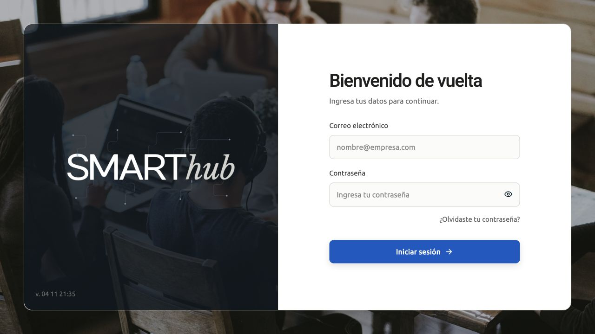

PROYECTO / 09
SMARThub
Plataforma de gestión interna que centraliza clientes, proyectos, tableros de trabajo, calendario y recursos para coordinar equipos y dar seguimiento a la operación diaria.

El problema
Coordinar clientes, proyectos y tareas sin perder el contexto del trabajo.
La solución
Un espacio de gestión que reúne clientes, tableros, calendario y recursos.
DEMO VISUAL ILUSTRATIVA · 18 SEGUNDOS
Mira el flujo en acción
Interfaz representativa con datos ficticios, basada en las funciones descritas del proyecto. No es una grabación del producto ni reproduce su interfaz exacta. No conecta sistemas ni realiza operaciones.
Sitio web · Estudio Norte
Rediseño de un sitio web
En desarrolloEquipo de diseño · viernes
Del pendiente a la revisión
Por hacer 1
En curso 1
En revisión 1
La revisión, en el calendario
Estudio Norte · Equipo de diseño
Leer la descripción del recorrido
Organizar
Proyecto de ejemplo: rediseño de un sitio. La información del cliente y el trabajo se reúnen en un mismo contexto.
Dar seguimiento
Tarea de ejemplo: revisar el prototipo. Un tablero permite representar su estado y los pendientes del equipo.
Planificar
Actividad de ejemplo: revisión del viernes. El calendario complementa la organización del proyecto.
También puedes leer los tres pasos a tu ritmo.